The best way for me to teach you, my little rubber duck, is for me to learn alongside you. Let's figure this out together! We are going to learn about the position property in css. I've previously used the display property with the value flexbox to position my blog posts and make them responsive.
Look at that. Lovely.
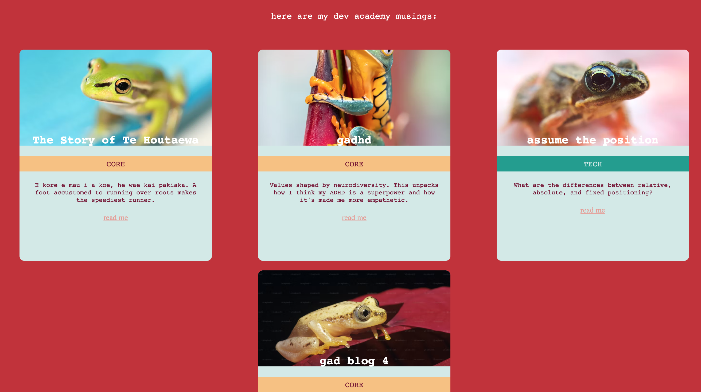Also, they stack on mobile using flex-wrap.
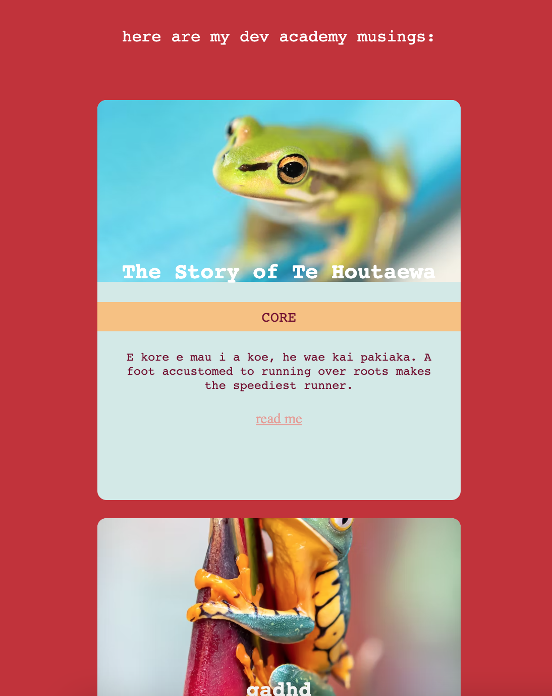We love to see it
I breezed passed it, having now heard about flexbox and getting sucked right into the craze I thought it would solve all my position problems. What a fool I was. I didn't realise that position is it's own property.
I have this issue with my home page.
I like the idea of having an overlapping tag above each blog post in the home page that identitifies it as a 'tech' or 'core' blog. I am sure once we start learning how to use conditional logic, these tags can be useful for filtering out content.
But for now I just want it to look good but, alas, this is how it currently looks:
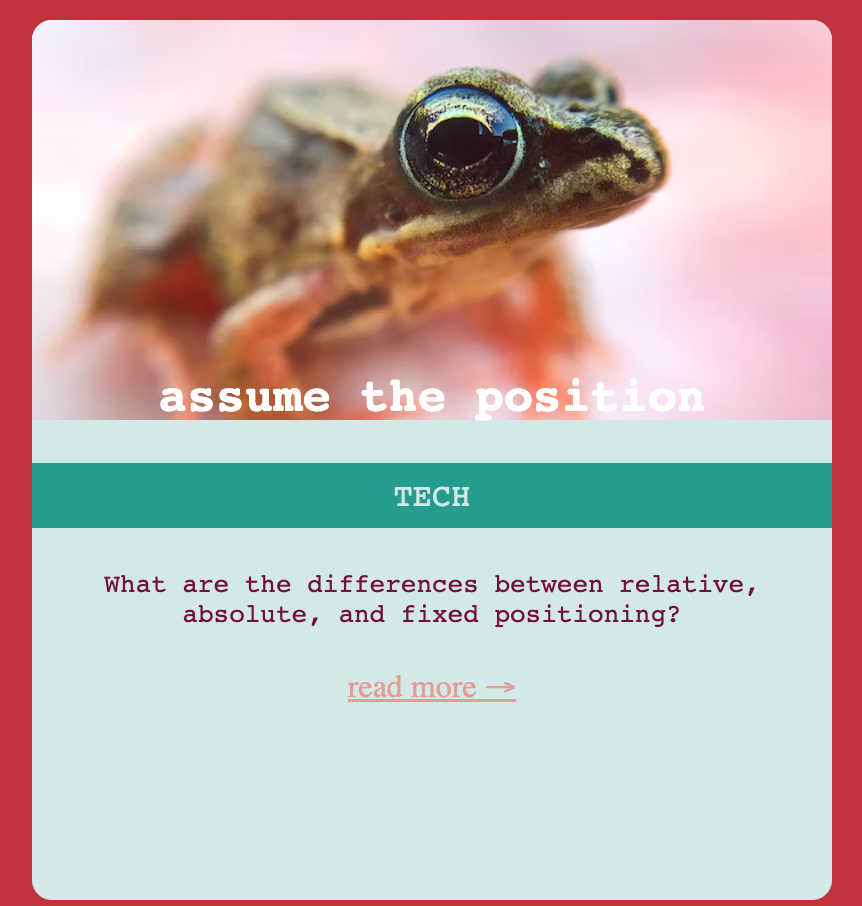This is what is happening behind the scenes:
This is the html
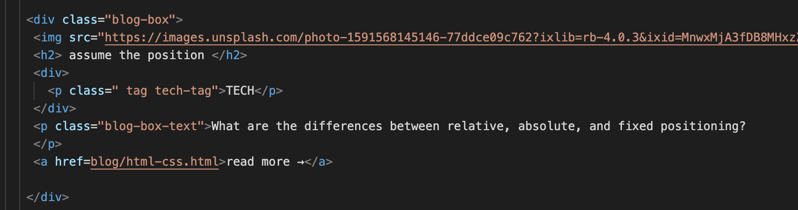This is the css
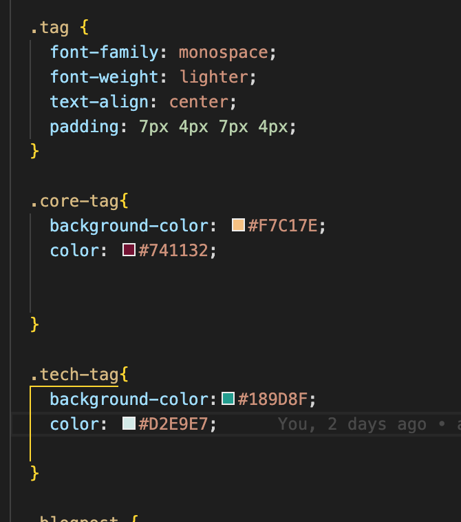Seems like I need the child object (tag) to attach to the top right hand corner of the parent (blog-box) and overlap. What are my options for position? A quick google search tells me there are five main types of positions in CSS- Relative, Absolute, Sticky, Fixed and Static. We'll just focus on three since static is the default and sticky uses scroll and that is not going to help my tag problem.
First let's make the tag look nice, we can change the display to inline (now we know that display/position are different properties) and round those corners out a bit.
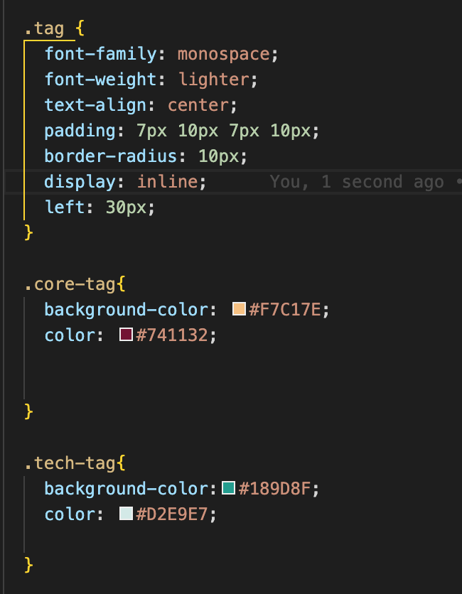and here are the results:
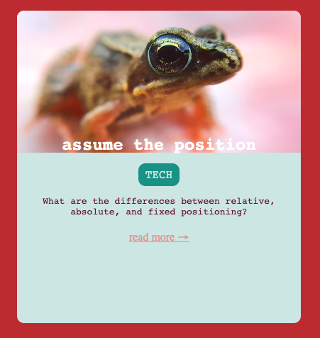Nice.
The relative position is named as such because the position is relative to its normal self. You can offset a position by adjusting the the top, bottom, left, and right properties.
Let's try it out!
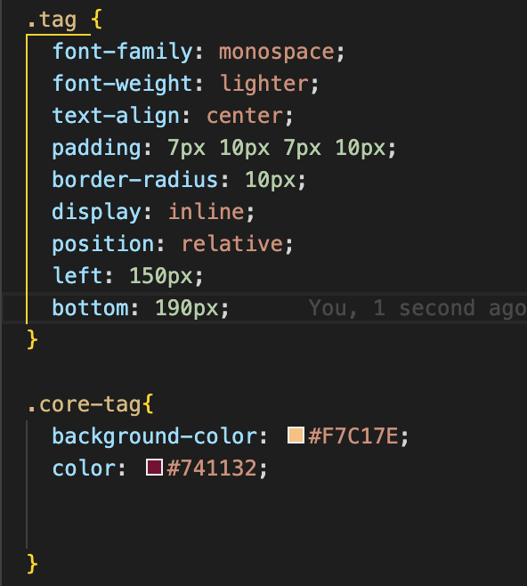Seems to do the trick!
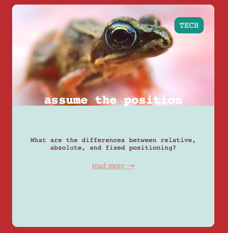But what if I want to change the width of the parent object (blog-box) from 400px to 800px.
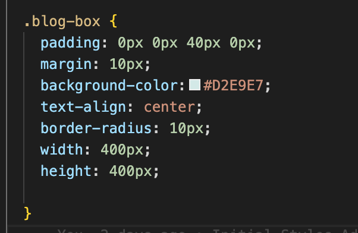 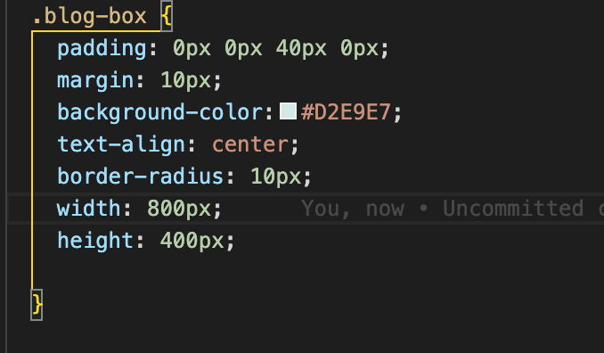Here's what it looks like.
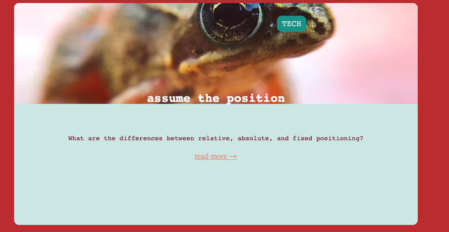That’s not ideal. Seems like the relative position might need to be adjusted every time. Time to try something else.
This position is in relative to the viewport. Let's try it out.
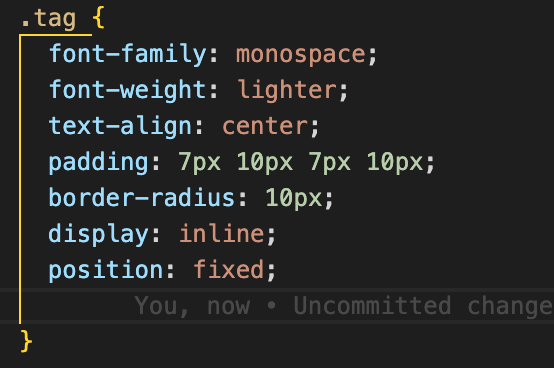What did that do?
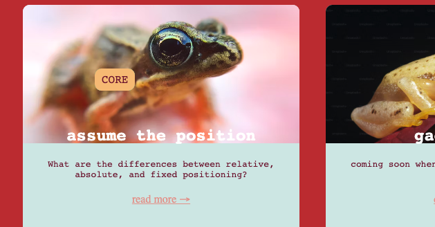Let's have a quick scroll
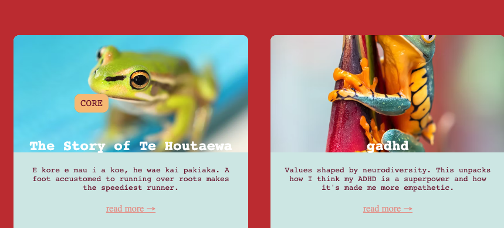It's still there.
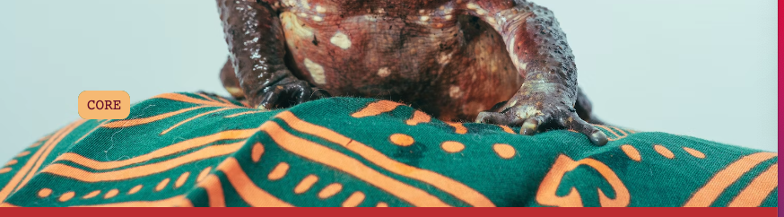Oh dear.
Okay this won't do.
An absolutely positioned element is relative to the nearest positioned parent. If none are positioned- it uses the body. So let's position the parent ‘blog-box' and set it to a relative position.
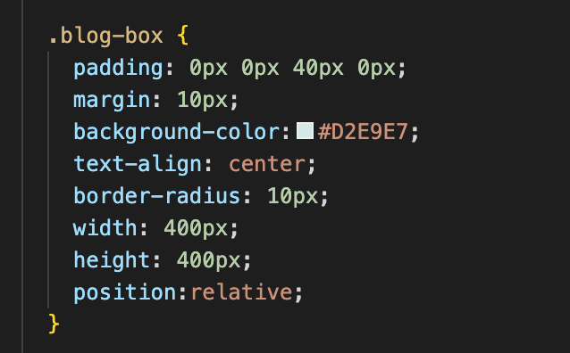Great now let's change the tags position to absolute:
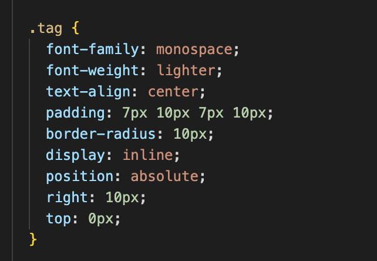Let's see how it looks:
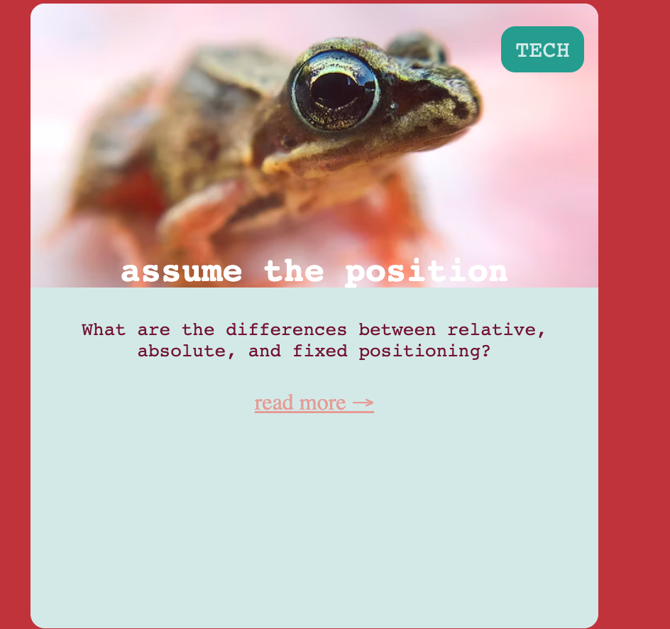Let's see what happens when I change size of the parent 'blog-box'.
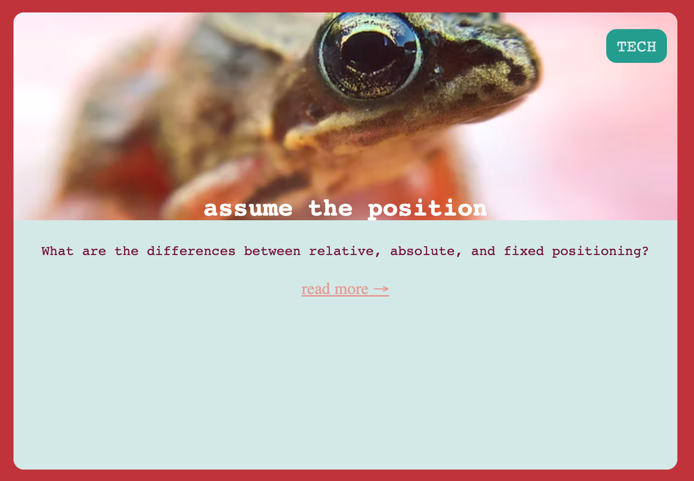Perfect.

Born in Johannesburg, South Africa. I'm here to learn practical skills, make cool shit and find better fonts.